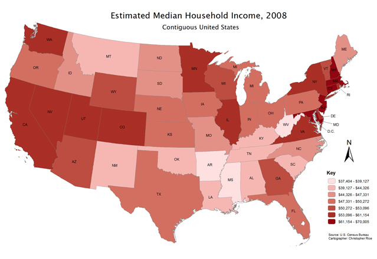
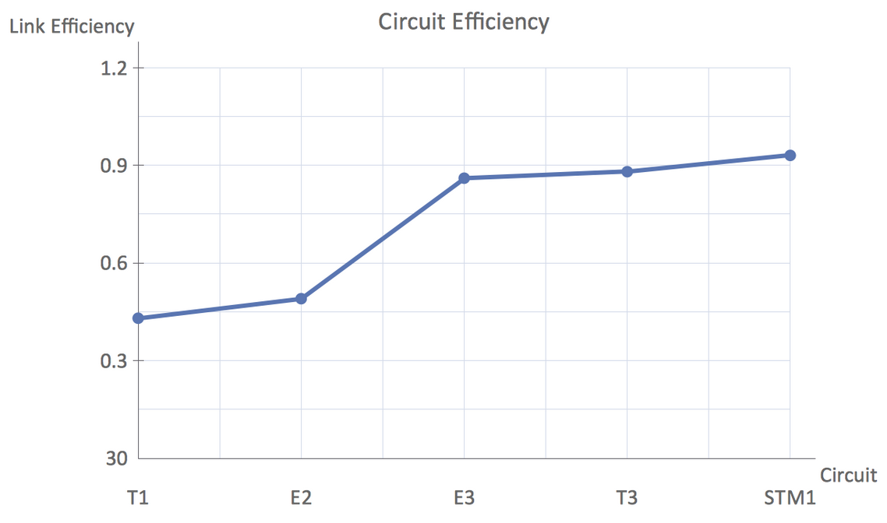
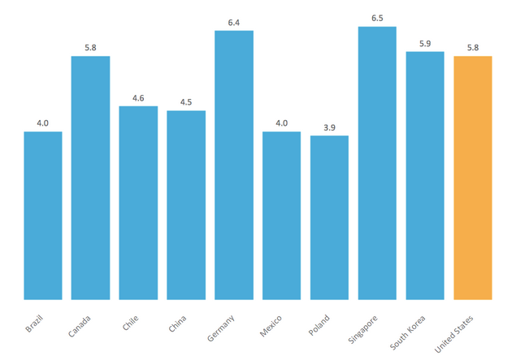
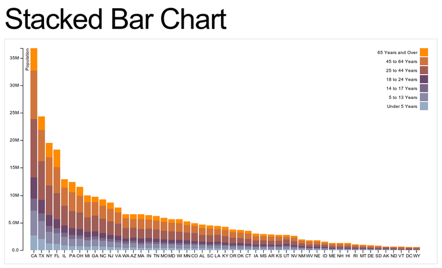
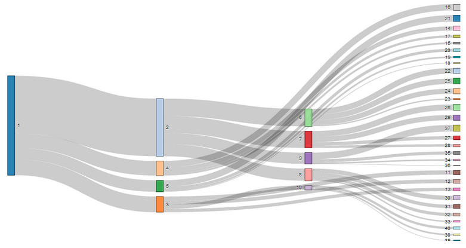
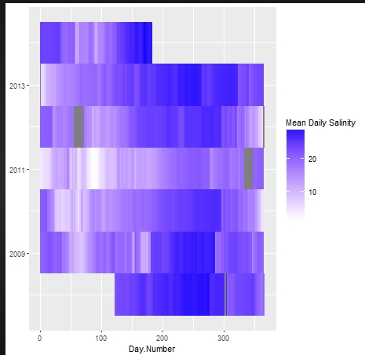
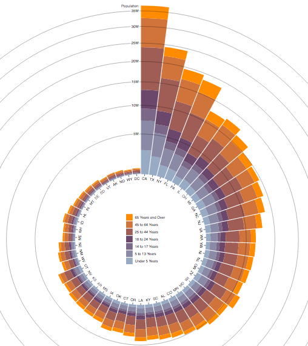
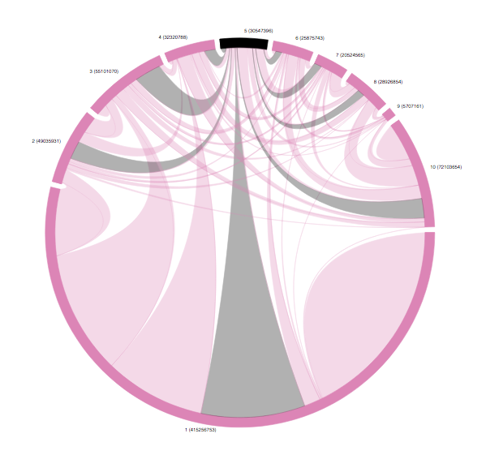

Duncan Gans & Tom Lucy: Michael Franz's Political Advertisement Data
Interactive Data Visualization
November 6, 2017
Final Project, Checkpoint 2: Prototyping
State by State Negativity Chloropleth

This visualization would be a chloropleth that would indicate the negativity
of the political advertisements in each state. We would look at a specific
time frame and either use the mean or median, or some other aggregation method
to determine the "average" negativity of the state's ads. Each state would
have a color corresponding to the negativity of their ads. Alternatively instead
of plotting negativity we could show issues/spending/etc.
Line graph of Spending over Time

This would be a relatively basic visualization that could plot change over time
of various values. One instance of this could be total spending. There is tons
of variation we could add here, including having different lines by party,
state, issue, or news channel. However, the main emphasis would be to see how
spending on political advertisements changes over time.
Bar Chart of Issues and Spending

This visualization could illustrate how the spending for political ads varies
with other variables. For instance, there could be a bar chart with the y axis
being the total spending, and each bar representing a single issue. This would
make it easy to see the relative importance of each of the issues. Alternatively
the bars could represent channels, states, or other variables.
Overall State Spending broken up by Issue

Because this visualization is a little more specific, there are a little bit
fewer possible applications of it. One neat application though, would be to have
the total height of the bar represent the total amount of spending by state.
Each section of the bar could represent a certain issue, so you could see
what states spend the most money, and what issues matter to those states. With
some of these it might make sense to do visualizations per capita, or at least
factor in the population differences of states.
Sankey Diagram of Political Ad Taxonomy

Here we could have a Sankey Diagram illustrating the aggregate of all political
ads. It could start by dividing the total into political parties, and then
within each party, dividing it into issues, and then possibly even negativity.
This would give a birds eye view of what political ads look like, and let you
break it down to more specifics.
Heatmap of Political Spending

An alternative to the Line Graph could be the heat map for visualizing how
spending changes over time. The perk of a heat map would be that if you did a
month by year heatmap you could see the clumping of warmer colors near november
and october regardless of the year, because that's when elections are.
Furthermore, it could be really cool to see how the general election years
compare to the midterm years. This would be a great visualization for seeing
what impacts the amount of political spending.
Radial Stacked Bar Chart

An alternative to the stacked bar chart would be to instead use a radial
stacked bar chart. Like before, the total height could be the total spending, or
possibly just the total amount of ads. Within each bar, you could have the
divisions be channels, positivity/negativity, issues, or some other variable.
Although this would be a very similar visualization to the stacked bar chart
it could be cool to do.
Chord Chart of Issues and Channels

Although I think chord charts are often hard to find a visualization for, the
data we have could be very good for it. Each section of the ring on the outside
would be either an issue, or a channel. Here, the issues would connect to the
channels, with larger connections indicating more ads. For instance, if MSNBC
aired a lot of ads that were focused on the environment, the connection would
be wider than the connection between Fox and the environment.